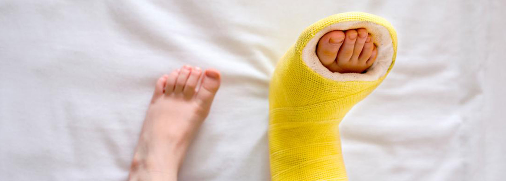
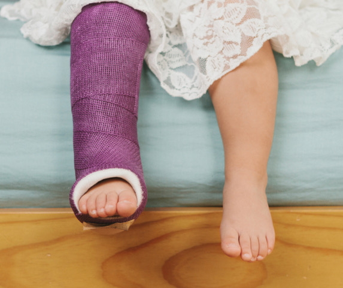
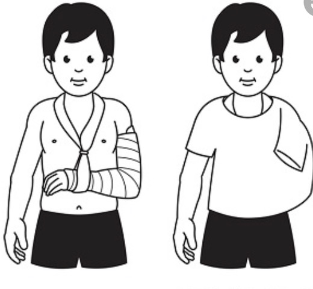
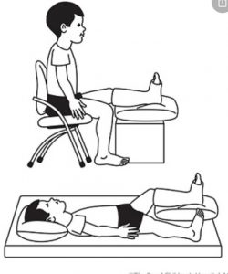
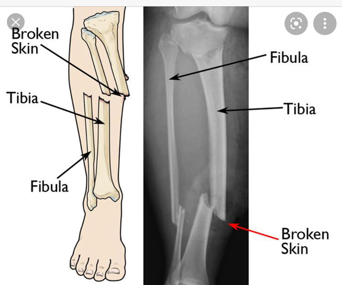

හැඳින්වීම

අස්ථි බිඳීම්

වයස අවුරුදු 1 සිට 6 දක්වා දරුවන්ගේ අස්ථි බිඳීම්.
ක්රියාශීලී දරුවන් ක්රීඩා කරන විට, ගෙදරදොර වැටීම් , හැප්පීම් වලදී අස්ථි බිඳී යා හැක. මෙවන් අවස්ථාවක නිවැරදි ප්රතිකාර නිවරදි වේලාවට ලබා නොදීම නිසා සංකුලතා වලට ලක් විය හැක. මෙහිදී ඉතා තීරණාත්මක වන්නේ වැරදුණු ගොඩ වෙදකම් වලින් ඇතිවන ඇද කුද හා අත්පා හා සංදී වලට සිදුවන හානිය පසුකාලීනව ප්රකෘති තත්ත්වයට පත් කිරීමට නොහැකි වීම නිසයි . මෙම කියමන වැලමිට සන්ධිය අවට සිදුවන අස්ථි බිඳීම් සඳහා සුවිශේෂ වේ . මෙම වයස් කාණ්ඩයේ දරුවන්ගේ අස්ථි බිඳීම් සරල ප්රතිකාර ක්රම මඟින් සම්පූර්ණයෙන්ම සුව කළ හැක. කරුණාකර නිසි ප්රතිකාර සඳහා යොමුවන්න. ඔබට ගැටලු තිබේ නම් අප අමතන්න .

වයස අවුරුදු 7 සිට 18 දක්වා දරුවන්ගේ අස්ථි බිඳීම්
උර මේඛලාව හා පුර්ව ගාත්රය (1) Collar bone/ Clavicle බිඳීම් සියල්ලම ශල්යකර්මයකින් තොරව සුව කළ හැක. ඉතාම කලාතුරකින් මෙම බිඳීම් ශල්යකර්මයකට භාජනය කිරීමට අවශ්ය වන අවස්ථා ඇත . (2) වැලමිටට ඉහළ කොටසේ සිදුවන අස්ථි බිඳීම්. එම කොටස නොසෙල්වා තැබීමෙන් සුවපත් වෙයි. මේ සඳහා පැරිස් බදාම ආධාරකයක් යොදා ගනී. කලාතුරකින් සිදුවන ස්නායු පැලී යාම නිසා මැණික්කටුව සන්ධියෙන් අත එසවීමට බාධා විය හැක. (3) වැලමිට සන්ධිය අවට සිදුවන බිඳී යෑම්. බොහෝවිට ශල්යකර්මයක් මගින් යථා තත්ත්වයට පත් කළ යුතුය. මෙම කොටස් බොහෝසෙයින් බිඳී ඇති නම් පසුකාලීනව වැලමිට සන්ධි ක්රියාකාරීත්වය යම් ප්රමාණයකින් අඩු වීමට ඉඩ ඇත. (4) වැලමිටෙන් පහළ කොටසේ සිදුවන බිඳී යෑම්. වැලමිටෙන් පහළ කොටසේ අස්ථි දෙකක් පවතී. අස්ථි දෙකම බිඳී ගිය විට නිර්වින්දනය කර භාවිතා කොට ඇදවුනු කොටස් නැවත කෙලින් කිරීම සිදුකෙරේ. අස්ථි දෙකම බිදී වෙන්වී ගිය විට ඒවා ශල්යකර්මයක් මඟින් යථා තත්ත්වයට පත් කිරීම කළ යුතුය . (5) ඇඟිලි වන සිදුවන බිඳී යෑම මෙම බිඳී යෑම විශේෂ ශල්යකර්ම වලින් තොරව බොහෝ විට සුව කළ හැකිය. විශේෂ බිඳීයැම වලට පමණක් ශල්යකර්මයක් කිරීම අවශ්යවේ. ශ්රෝණි මේඛලාව හා අපර ගාත්රය (6) උකුල් සන්ධිය හා කලවය මෙම වයස් කාණ්ඩයේ දරුවන්ගේ උකුල් සන්ධියේ බිඳී යාම් ශල්යකර්මයකට භාජනය කිරීම අත්යවශ්ය වේ. ඊට අමතරව කලවා ප්රදේශය අස්ථි බිඳී යාම අපි බොහෝ අවස්ථාවල ශල්යකර්මයකට භාජනය කිරීම අනුමත කරමු. එසේ නොකළ අවස්ථා වල දී කකුල කෙටි වීම, ඇදට සවිවීම සිදුවිය හැක.

(7) දණහිසින් පහළ කොටසේ සිදුවන බිඳීම්. බිඳුනු කොටස් කැබලි රාශියකට විසිරී නොමැති අවස්ථාවල දී පැරිස් බදාම ආධාරකයක් මාර්ගයෙන් නිසොල්මන්ව තැබීමෙන් සුව කළ හැක. එසේ නොවුණහොත් ශල්යකර්මයකට භාජනය කළ යුතුය. (8) වළලුකර ආශ්රිත ව සිදු වන කැබලි රාශියකට වීසිරි සිදුවන බිඳීයාම් ශල්යකර්මයක් මඟින් යථා තත්ත්වයට පත් කළ යුතුමය.

සියලුම වයස් වල අස්ථි බිඳීම් ආශ්රිතව තුවාලයක් ඇති විට.
අස්ථි බිදීම් සිදුවන විට හම තුවාල වී අස්ථි කොටස් පිටතට නිරාවරණය විය හැක. මෙහිදී බාහිර පරිසරයේ ඇති පස්,වැලි , දිරාගිය කොටස් හෝ වෙනත් අපද්රව්ය තුවාලය තුල තැවරිමක් සිදුවේ. ඒ නිසා එම තුවාලය ආසාදනය වීමට ලක් වේ(පැසවීම ) . ප්රතිජීවක බෙහෙත් ලබා දීම අවශ්ය වේ. මෙවැනි අවස්ථාවල අසාදන පාලනයකින් තොරව අභ්යන්තරයෙන් යොදන ලෝහමය ආධාරක යෙදීම සුදුසු නොවේ. මීට අමතරව වරින්වර තුවාලය පිරිසිදු කිරීම අවශ්යවේ. මෙවැනි අවස්ථා වල තුවාලය සුව කර ගන්නා තුරු බාහිරින් සවි කරන ලද ලෝහමය රාමුවකට සවි කර ප්රතිකාර ලබා දෙනු ලැබේ. තුවාලය විශාල නම් ඒ සඳහා රුධිරවාහිනී බද්ධ කිරීමේ ශල්යකර්ම හා ප්ලාස්ටික් සැත්කම් කිරීමේ අවශ්යතාවයක් ද විය හැක .